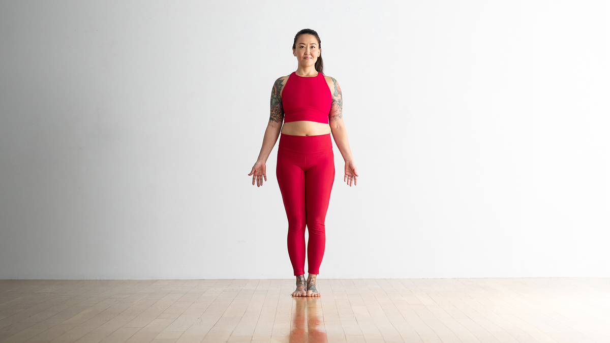
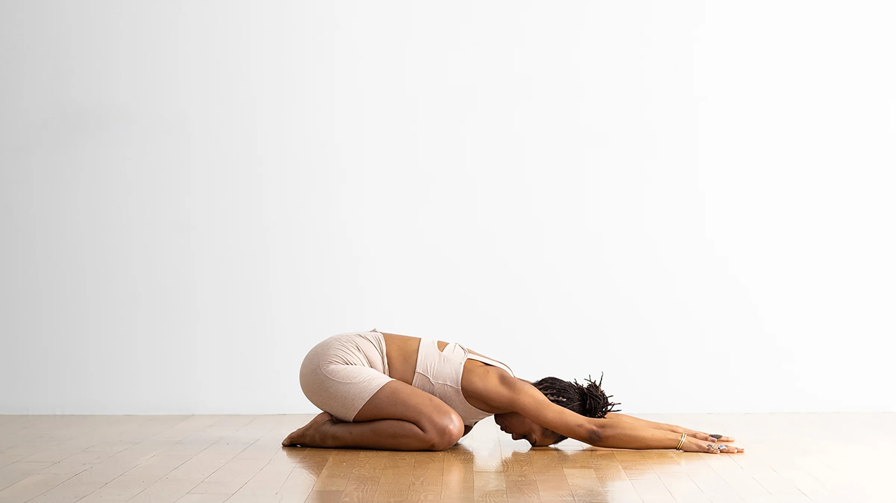
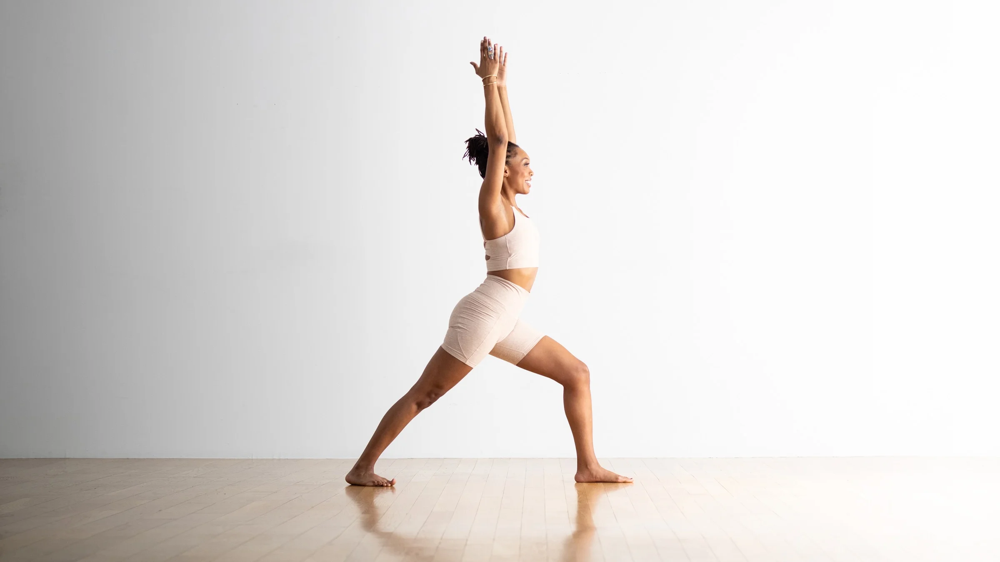
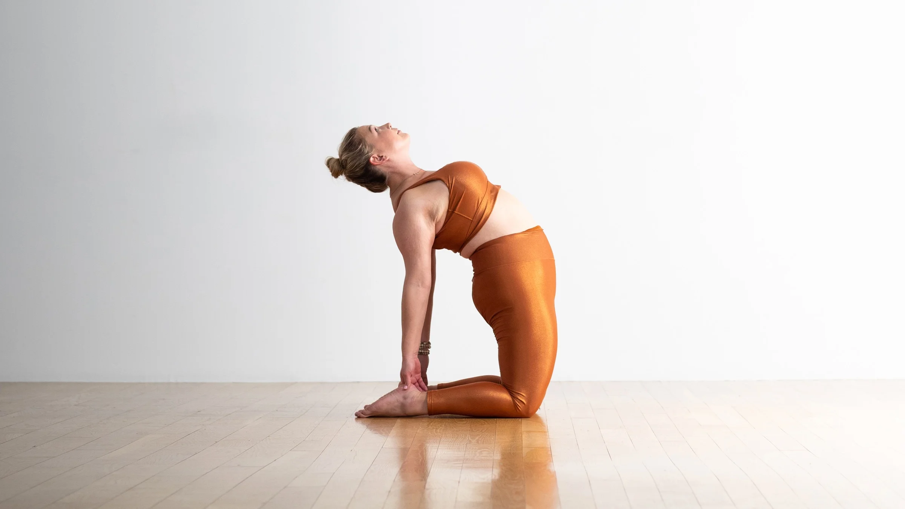
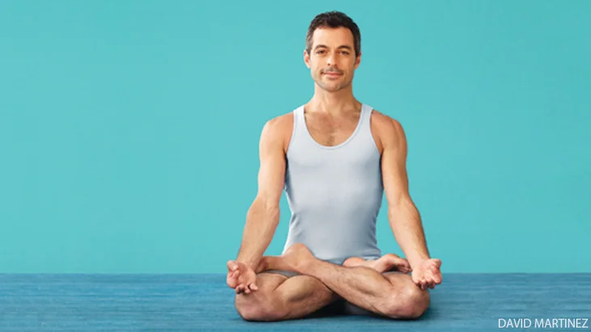
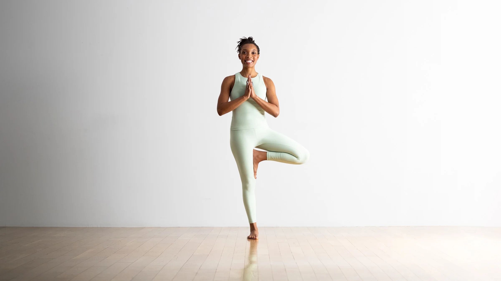

Yoga
Yoga and Ayurveda share a profound relationship deeply rooted in ancient Indian traditions. While Ayurveda focuses on holistic health through balance and harmony, yoga complements this philosophy by nurturing physical, mental, and spiritual well-being through movement, breath, and meditation. Together, they form a synergistic union, with yoga enhancing the effectiveness of Ayurvedic therapies and Ayurveda providing a comprehensive framework for maximizing the benefits of yoga practice. This harmonious integration fosters a holistic approach to wellness, promoting optimal health and vitality for body, mind, and spirit.
Tadasana (Mountain Pose)
Tadasana, or Mountain Pose, cultivates a sense of stability and grounding, aligning the body and mind.
Steps:
- Stand tall with your feet together, arms at your sides, and weight evenly distributed.
- Inhale as you raise your arms overhead, palms facing each other.
- Lengthen your spine, reaching through the crown of your head, and ground down through your feet.
Adho Mukha Svanasana (Downward-Facing Dog Pose)
Adho Mukha Svanasana, or Downward-Facing Dog Pose, stretches the entire body while promoting relaxation and rejuvenation.

Steps:
- Begin on your hands and knees, with your wrists under your shoulders and knees under your hips.
- Exhale as you lift your hips towards the ceiling, straightening your arms and legs.
- Press your palms into the ground, lengthen your spine, and relax your head between your arms.
Balasana (Child's Pose)
Balasana, or Child's Pose, promotes relaxation, releases tension in the back, and encourages introspection and surrender.
Steps:
- Start on your hands and knees, then sit back on your heels.
- Exhale as you lower your chest towards your thighs and extend your arms forward, resting your forehead on the mat.
- Breathe deeply and relax into the pose, allowing your spine to lengthen and your hips to soften.
Virabhadrasana I (Warrior I Pose)
Virabhadrasana I, or Warrior I Pose, symbolizes strength, courage, and focus, energizing the body and mind.
Steps:
- Begin in Tadasana (Mountain Pose), then step your left foot back, keeping your right knee directly above your ankle.
- Inhale as you raise your arms overhead, palms facing each other, and square your hips towards the front of the mat.
- Sink into your front knee, lengthen your spine, and gaze forward, holding the pose with strength and determination.
Ustrasana (Camel Pose)
"Ustra" means camel. This backbend opens the heart chakra, improves digestion, and relieves lower back pain..
Steps:
- Kneel on the mat with knees hip-width apart and toes pointing back.
- Place your hands on your lower back with fingers pointing downward.
- Inhale, engage your core, and lean back, arching your spine.
- Reach your hands toward your heels, keeping your neck long and gaze upward. Hold the pose for a few breaths.
Padmasana (Lotus Pose)
"Padma" means lotus. This seated pose calms the mind, enhances concentration, and promotes spiritual growth.
Steps:
- Sit on the mat with legs extended in front of you.
- Bend your right knee and place your right foot on your left thigh, bringing the heel close to your abdomen.
- Bend your left knee and place your left foot on your right thigh, bringing the heels close to your abdomen.
- Rest your hands on your knees in mudra position or place them on your thighs, palms facing up.
Vrikshasana (Tree Pose)
"Padma" means lotus. This seated pose calms the mind, enhances concentration, and promotes spiritual growth.
Steps:
- Stand tall with feet hip-width apart and arms at your sides.
- Shift your weight onto your left foot and lift your right foot off the ground.
- Place the sole of your right foot against your inner left thigh or calf, avoiding the knee.
- Press your foot into your thigh or calf while maintaining a tall spine, hands in prayer position or raised overhead.